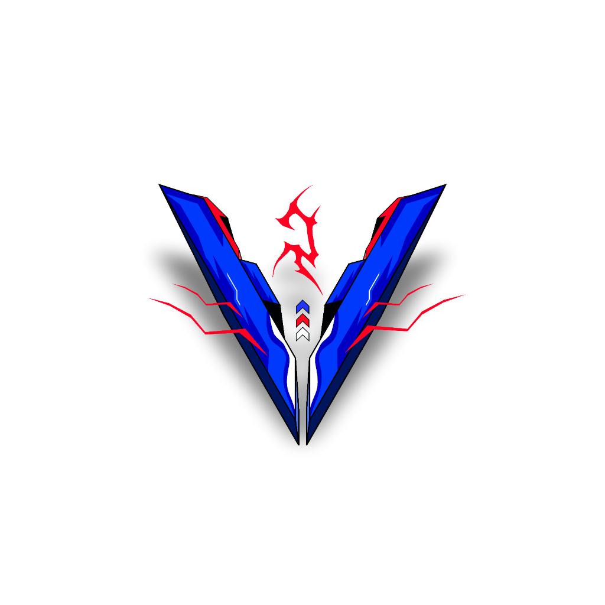

Menghadirkan identitas visual yang tajam melalui manipulasi grafis presisi, desain vektor terstruktur, serta editing video sinematik dengan ritme cerita yang kuat.

Visual Crafter & Video Storyteller
Halo! Saya Dhanu. Saya mendedikasikan keahlian saya dalam dunia seni visual untuk membantu menciptakan karya grafis dan video yang berkelas serta memiliki karakter kuat.
Bagi saya, perpaduan antara desain statis yang detail di Photoshop & CorelDRAW serta alur cerita yang hidup di Premiere Pro & After Effects adalah kombinasi ideal untuk menghasilkan karya visual yang berdaya pikat tinggi.
Projek Selesai
Tahun Pengalaman
% Komitmen Kualitas
Setiap konsep visual dirancang terstruktur dan disesuaikan dengan kebutuhan estetika modern.
Memperkuat nuansa emosional video melalui pemilihan tone warna yang harmonis.
Dukungan format render video tajam hingga 4K dan vektor bebas pecah untuk segala kebutuhan.
Didukung oleh perangkat lunak standar industri kreatif untuk menghasilkan visual dan video dengan standar terbaik.
Manipulasi visual foto yang realistis, retouching, poster promosi, komposisi grafis, dan digital imaging beresolusi tinggi.
Desain vektor presisi, perancangan identitas logo, tata letak brosur, banner, kemasan, serta file siap cetak format CMYK.
Pembuatan kinetic typography, animasi logo 2D/3D, transisi khusus, efek visual (VFX), dan compositing motion dinamis.
Penyuntingan alur cerita video, sinkronisasi audio, color grading sinematik, video YouTube, dan format konten vertikal.